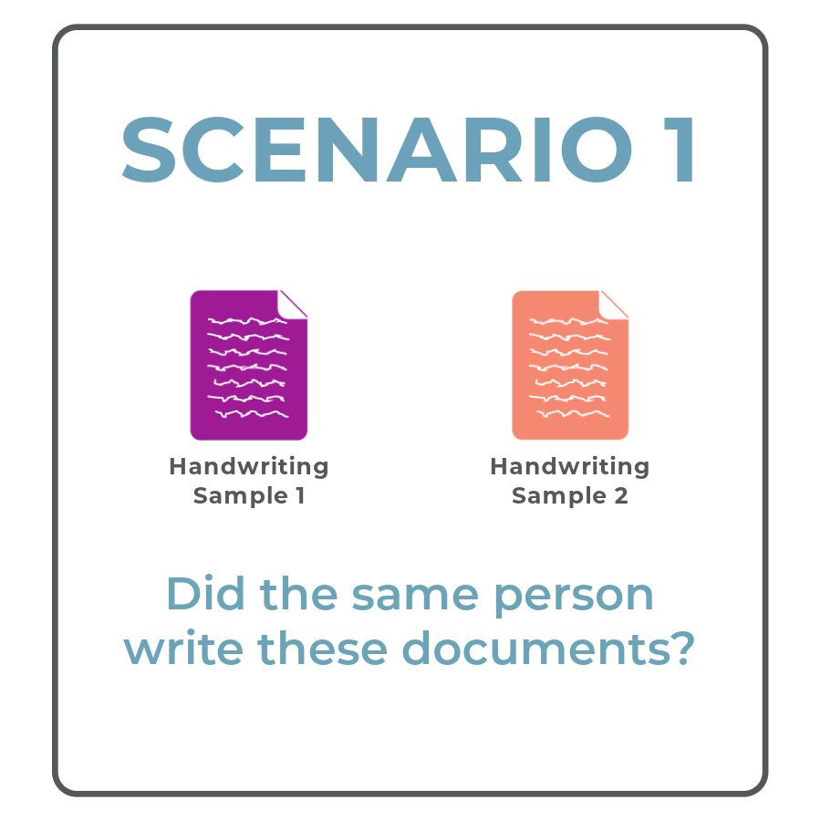
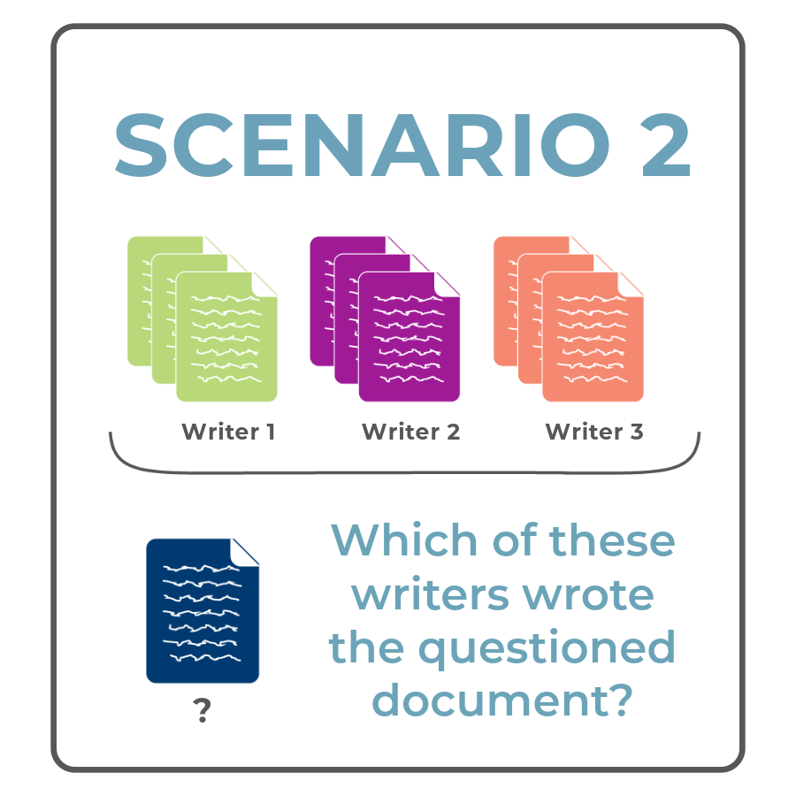

Handwriting Samples
Handwriter takes scanned handwriting samples saved as PNG images. For best results, scan your samples at 300 DPI.
Unlock the power of handwriting analysis with handwriter. This tool is designed to assist forensic examiners by analyzing handwritten documents. Whether you are a forensic document examiner, legal professional, academic, or simply curious about how statistics are applied to handwriting, handwriter provides an automated way to evaluate handwriting samples.
Handwriter takes scanned handwriting samples saved as PNG images. For best results, scan your samples at 300 DPI.
Handwriter splits the scanned handwriting into component shapes called graphs. Graphs capture shapes, not necessarily individual letters. They might be a part of a letter or contain parts of multiple letters.
Handwriter analyzed handwriting samples from 100 writers, grouping the tens of thousands of graphs into 40 forty clusters of similar shapes with a K-Means clustering algorithm. The result is a cluster template of 40 exemplar handwriting shapes. These shapes might be part of a letter or contain parts of multiple letters. The cluster template is used to estimate writer profiles.
Each graph in a handwriting sample is matched to its most similar shape in the cluster template. By counting how often a writer uses graphs from each cluster, handwriter creates a profile of a writer’s handwriting style. This profile shows the writer’s tendency to form shapes in particular ways.

In this scenario, a document examiner has two handwritten documents. They might know who wrote one of the documents, or they might not know who wrote either document. The examiner wants to know whether the documents were written by the same person. We call this scenario the open set problem.

In this scenario, a document examiner has a handwritten document from an unknown writer and a closed set of potential writers, where the document must have been written by one of the potential writers. For example, if a handwritten threat letter is found in a prison, the closed-set of potential writers is people who had access to the prison. We call this scenario the closed set problem.
Get started with the Quick Start Guide or learn more about the methods.
195 Durham Center
613 Morrill Road
Ames, Iowa 50011
(515) 294-7278
csafe@iastate.edu